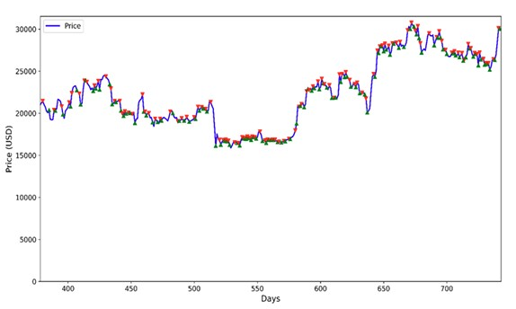
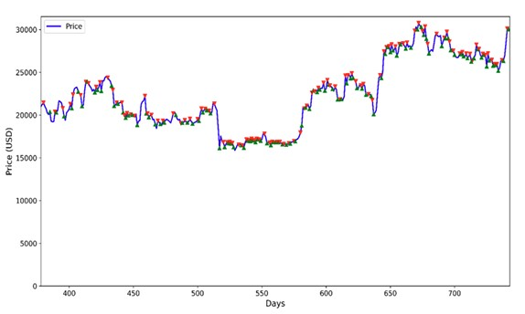

Hello, I am Damilare.
About Me
I earned my Ph.D. in Systems Engineering from the Missouri University of Science and Technology, where I focused on computational intelligence and complex systems modeling. During my studies, I discovered a passion for working with data, particularly in designing machine learning and deep learning systems to solve real-world problems. Observing how artificial intelligence can transform large datasets into actionable insights inspired me to explore its potential further. These experiences solidified my belief that AI can streamline processes, reveal new possibilities, and ultimately shape a more efficient future.
I am passionate about creating intelligent systems that address practical challenges and make daily life more convenient. Whether developing small-scale prototypes or managing large-scale implementations, I strive to integrate advanced AI solutions that promote sustainable progress. I aim to unite theory with practice, ensuring that artificial intelligence becomes functional and accessible. As I embark on new opportunities, I remain eager to learn, collaborate, and contribute meaningfully to our rapidly changing world.
Recent Projects
An intelligent agent system that combines MySQL database interactions with retrieval-augmented generation for enhanced data querying and analysis.
Deep learning models for Bitcoin price prediction using on-chain data, featuring CNN-LSTM, LSTNet, and TCN architectures.
Innovative price prediction system combining chart image analysis with market data using multimodal deep learning.
 

Skills & Research Interests
Programming
Python, SQL, and MATLAB.
Machine Learning
Supervised learning, unsupervised learning, and deep learning architectures.
Natural Language Processing
Text classification and sentiment analysis.
Generative AI
Prompt engineering, retrieval-augmented generation (RAG), and AI agents.
MLOps & Deployment
Git, Docker, CI/CD, and model monitoring systems.
Data Engineering
Data preprocessing, feature engineering, ETL pipelines, and data quality assurance.
Operations Research
Mathematical optimization, decision analysis, resource allocation, and supplychain management.
Systems Thinking & Modeling
Complex systems analysis, simulation systems, and sustainable solutions design.
Publications
Published Papers
Under Review
Using Machine and Deep Learning Models, On-Chain Data, and Technical Analysis for Predicting Price Direction and Magnitude
Multimodal Price Prediction Model Using Chart Images and Market Data
Contact Me
If you have any questions or just want to connect, feel free to reach out to me through any of the platforms below.